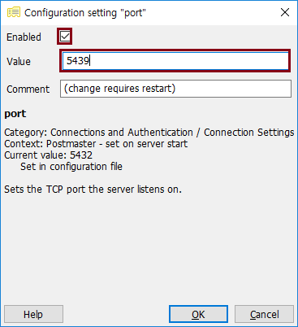

postgres.conf 파일은 postgres 데이터베이스 설정을 변경할 수 있는 파일이다. 다음과 같은 설정을 변경할 수 있다.
listen_address 를 변경하여 postgres 데이터베이스에 허용할 IP 를 설정할 수 있음
port 값 변경하여 postgres 데이터베이스 port 를 변경할 수 있음
auto vacuum, max connection 등 전반적인 부분을 변경할 수 있음
postgres.conf 파일 경로
윈도우: C:\Program Files\PostgreSQL\9.5\data
우분투: /etc/postgresql/9.5/main (우분투 버전마다 다를수도 있음)
리눅스에서 postgres.conf 파일 찾는 팁!
sudo find / -name postgresql.conf
아래는 윈도우에서 pgAdmin3 툴로 postgresql.conf 파일을 변경하는 방법에 대해 설명한다.
UI 를 제공하지 않는 리눅스는 sudo vi /etc/postgresql/9.5/main/postgresql.conf 으로 해당 라인을 주석을 제거한 후 원하는 값으로 수정하면 된다.
port 변경 방법
pgAdmin3 > DB 연결 > Tools > Server Configuration > postgresql.conf
port 항목 더블 클릭
포트 입력 후 Enabled 에 체크

저장 버튼 클릭
Stop Service 클릭
Start Service 클릭, 좌측 하단에 보면 Stop Service 에 대한 결과가 나와있음
기존에 사용하던 연결 링크 클릭해도 접속이 안됨
PostgreSQL 9.5 연결 > Properties.. 선택
포트 변경 후 다시 비밀번호 입력하여 접속하면 접속됨
허용 IP 변경 방법
listen_address 항목 더블 클릭
허용 IP 입력 후 Enabled 에 체크 (모두 허용 하고 싶으면 * 을 입력)
postgres 서비스 재시작 후 접속
Let's Prcactice
특정 IP 만 허용하여 실제로 적용되는지 테스트 해보자.
리눅스에서 포트 및 IP 를 수정해 보자.
pgAdmin3 > Tools > Server Configuration 을 선택하는 것 대신 pgAdmin3 > File > Open postgresql.conf 로 사용해 보자.